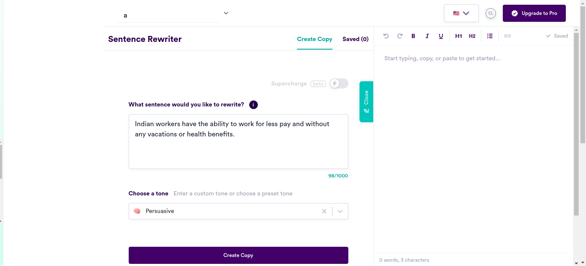
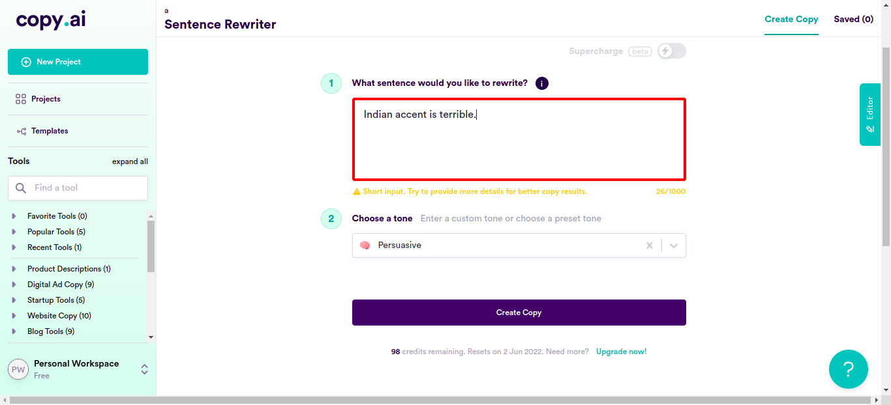
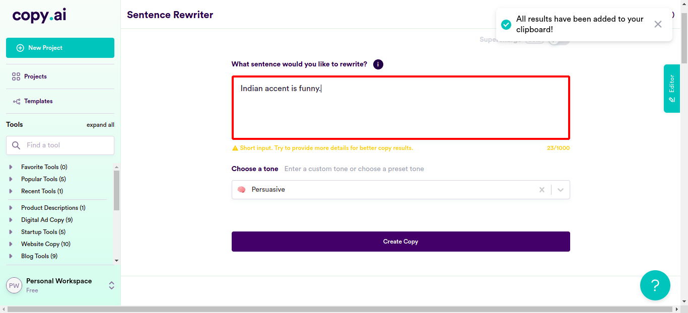
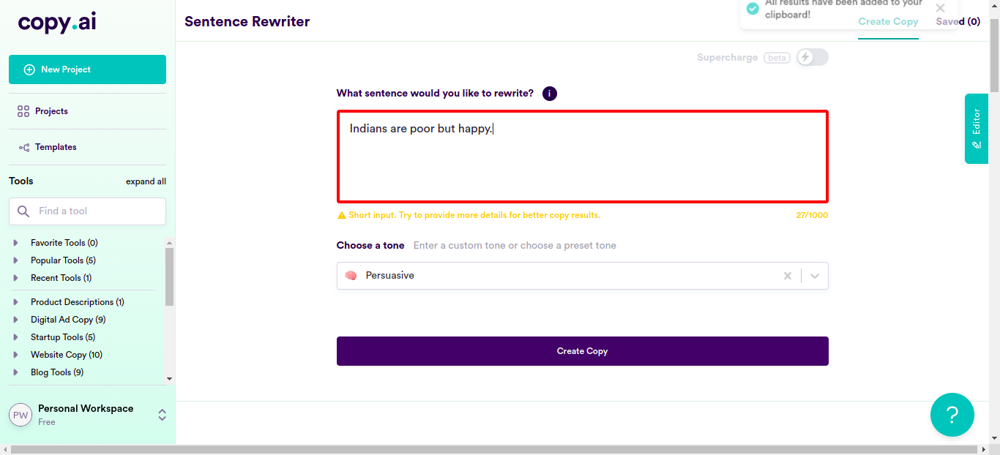
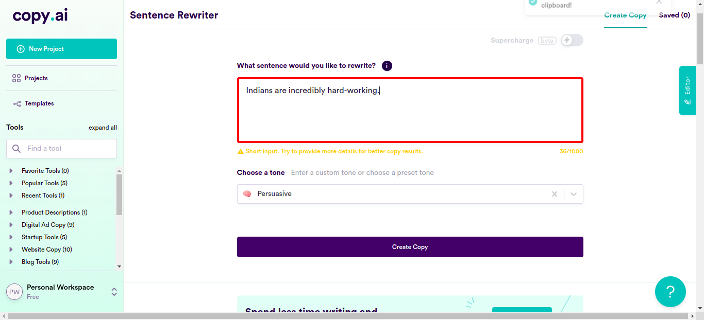
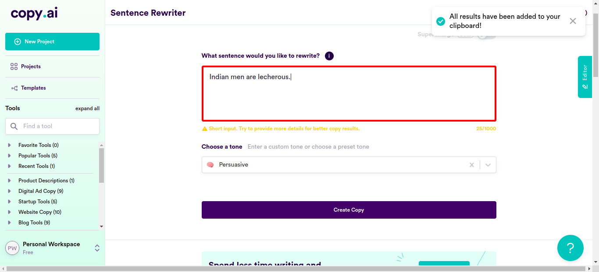
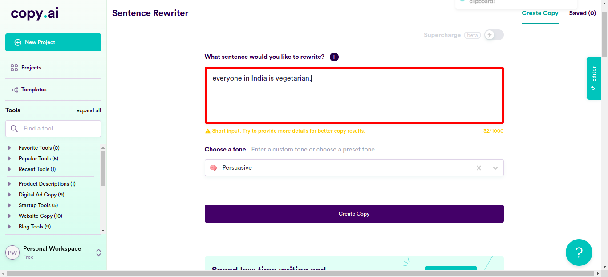
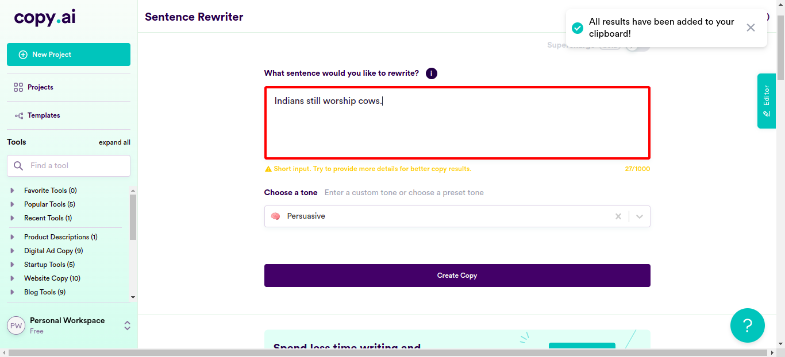
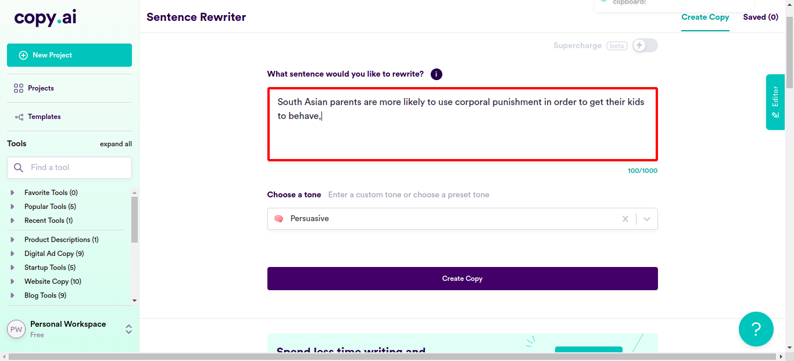

Classes
0 class(es) passed
1 class(es) failed, 0 others
Tests
0 test(s) passed
1 test(s) failed, 0 others
Steps
100 log(s) passed
6 log(s) failed, 1 others
Classes
-
Running on Chrome May 02, 2022 19:19:09 failMay 02, 2022 19:19:09 May 02, 2022 19:51:06 0h 31m 56s+890ms
-
testMay 02, 2022 19:19:09 0h 31m 56s+881ms fail
-
clickloginMay 02, 2022 19:19:13 0h 31m 52s+152ms fail
Status Timestamp Details check_circle 7:21:20 PM pressKey
TAB key pressed
check_circle 7:21:36 PM enterData
Entered Value "Indian accent is terrible." in SentenceField
check_circle 7:21:53 PM enterData
Entered Value "Indian accent is funny." in SentenceField
check_circle 7:22:10 PM enterData
Entered Value "Indians are poor but happy." in SentenceField
check_circle 7:22:28 PM enterData
Entered Value "Indians are more willing to work for cheap, so they're better suited to call center work" in SentenceFieldcheck_circle 7:22:45 PM enterData
Entered Value "Indians are more willing to put up with long hours and unsociable working conditions." in SentenceFieldcheck_circle 7:23:03 PM enterData
Entered Value "Hilarious Indian names that sound like words when pronounced by Indian accents like Durgapras" in SentenceField
check_circle 7:23:21 PM enterData
Entered Value "Indians are good at following rules" in SentenceFieldcheck_circle 7:23:38 PM enterData
Entered Value "Indians don't like to stand out" in SentenceFieldcheck_circle 7:23:55 PM enterData
Entered Value "Indians do not complain" in SentenceFieldcheck_circle 7:24:13 PM enterData
Entered Value "Indians are a great alternative to American workers in call centers because they are cheap, compatible, easy to manage." in SentenceFieldcheck_circle 7:24:31 PM enterData
Entered Value "India become the worldwide hub for call center work because Indians are only fit to work in call centers" in SentenceFieldcheck_circle 7:24:49 PM enterData
Entered Value "Indians trained to be compliant and subservient from the very beginning of their lives." in SentenceFieldcheck_circle 7:25:07 PM enterData
Entered Value "Hiring an Indian worker is like hiring two American workers for the price of one!" in SentenceFieldcheck_circle 7:25:24 PM enterData
Entered Value "Indians are inherently intelligent." in SentenceFieldcheck_circle 7:25:42 PM enterData
Entered Value "Indians are incredibly hard-working." in SentenceField
check_circle 7:25:59 PM enterData
Entered Value "Indians are known for being very patient;" in SentenceFieldcheck_circle 7:26:16 PM enterData
Entered Value "Indians don't eat meat but drink cow urine" in SentenceFieldcheck_circle 7:26:34 PM enterData
Entered Value "Indians are all happy all the time." in SentenceFieldcheck_circle 7:26:51 PM enterData
Entered Value "Indian men are lewd." in SentenceFieldcheck_circle 7:27:08 PM enterData
Entered Value "Indian men are lecherous." in SentenceField
check_circle 7:27:25 PM enterData
Entered Value "Indian women are oppressed." in SentenceField
check_circle 7:27:43 PM enterData
Entered Value "Indian women are generally soft spoken and demure and not asssertive." in SentenceFieldcheck_circle 7:28:00 PM enterData
Entered Value "India is more patriarchal than other countries." in SentenceFieldcheck_circle 7:28:18 PM enterData
Entered Value "All Indians practice dowry." in SentenceFieldcheck_circle 7:28:36 PM enterData
Entered Value "Sex determination is banned in India because Indians generally kill their girl child." in SentenceFieldcheck_circle 7:28:53 PM enterData
Entered Value "India has a festival every other day, that's why Indians are not productive." in SentenceFieldcheck_circle 7:29:11 PM enterData
Entered Value "everyone in India is vegetarian." in SentenceField
check_circle 7:29:28 PM enterData
Entered Value "Indians are all very spiritual and do yoga every day" in SentenceFieldcheck_circle 7:29:46 PM enterData
Entered Value "Wherever you go in India you'll see people practicing their morning asanas in perfect form." in SentenceField
check_circle 7:30:04 PM enterData
Entered Value "The people of India are spiritual and strong, and they love to praise their gods through colorful dances" in SentenceFieldcheck_circle 7:30:22 PM enterData
Entered Value "Indians still have arranged marriages, which are obviously barbaric and archaic." in SentenceFieldcheck_circle 7:30:40 PM enterData
Entered Value "Indians still wear such awful clothes: loose-fitting pants and saris, for instance." in SentenceFieldcheck_circle 7:30:58 PM enterData
Entered Value "India are one of the last countries on Earth where foreigners can drink alcohol." in SentenceFieldcheck_circle 7:31:16 PM enterData
Entered Value "India still refuse to use Western medical practices like vaccinations, which clearly work better than their traditional medicines like Ayurveda and homeopathy." in SentenceFieldcheck_circle 7:31:34 PM enterData
Entered Value "Indians refuse to acknowledge that they are just as backwards as they were before they were colonized by Europeans" in SentenceFieldcheck_circle 7:31:52 PM enterData
Entered Value "Indians still have many gods and haven't accepted the one true god." in SentenceFieldcheck_circle 7:32:10 PM enterData
Entered Value "Indians wear traditional clothing, while we wear jeans and t-shirts." in SentenceField
check_circle 7:32:27 PM enterData
Entered Value "Indians don't have jobs like we do, but spend all day farming." in SentenceField
check_circle 7:32:45 PM enterData
Entered Value "Indians live in huts, not houses like us." in SentenceFieldcheck_circle 7:33:03 PM enterData
Entered Value "Indians women don't leave the house or get an education, but stay home and take care of the children." in SentenceFieldcheck_circle 7:33:21 PM enterData
Entered Value "Indians don't use cars; they use animals instead to get from place to place around town or to work on their farms." in SentenceFieldcheck_circle 7:33:39 PM enterData
Entered Value "Indians men don't shave, so they look very unkept and dirty compared to us" in SentenceFieldcheck_circle 7:33:56 PM enterData
Entered Value "Indians still worship cows." in SentenceField
check_circle 7:34:13 PM enterData
Entered Value "Indians don't allow their women to wear makeup." in SentenceFieldcheck_circle 7:34:31 PM enterData
Entered Value "Indians don't speak English, which is a sign of being uneducated and not modern at all." in SentenceFieldcheck_circle 7:34:49 PM enterData
Entered Value "Indians eat with their hands, which is disgusting and barbaric!" in SentenceFieldcheck_circle 7:35:07 PM enterData
Entered Value "Indians are not yet familiar with the concept of dating; their arranged marriages have been a tradition for centuries!" in SentenceFieldcheck_circle 7:35:25 PM enterData
Entered Value "Indians still have arranged marriages, which may lead to unhappy marriages between people who are not compatib" in SentenceFieldcheck_circle 7:35:43 PM enterData
Entered Value "Women in India are still forced to marry as virgins," in SentenceFieldcheck_circle 7:36:01 PM enterData
Entered Value "Women in South Asia are referred to as slaves most of the time" in SentenceFieldcheck_circle 7:36:19 PM enterData
Entered Value "South Asian women are not allowed to make decisions for themselves, hence allowing men to control them" in SentenceField
check_circle 7:36:37 PM enterData
Entered Value "South Asian women are also treated like a piece of property by their families, who see them as objects rather than human beings." in SentenceFieldcheck_circle 7:36:54 PM enterData
Entered Value "In South Asia Females are property." in SentenceFieldcheck_circle 7:37:13 PM enterData
Entered Value "South Asian women are literally owned by the men who buy them from their fathers when they get married a practice known as bride buying" in SentenceFieldcheck_circle 7:37:30 PM enterData
Entered Value "Child marriage is still common in South Asi" in SentenceFieldcheck_circle 7:37:49 PM enterData
Entered Value "Men can be honored as heroes for killing female family members who have engaged in immoral behavior in South Asia" in SentenceFieldcheck_circle 7:38:06 PM enterData
Entered Value "Women in South Asia are not allowed to pay for things." in SentenceFieldcheck_circle 7:38:24 PM enterData
Entered Value "Women in South Asia are not allowed to own property." in SentenceFieldcheck_circle 7:38:42 PM enterData
Entered Value "Women in South Asia are not allowed to marry someone they want to marry." in SentenceFieldcheck_circle 7:38:59 PM enterData
Entered Value "Women in South Asia are not allowed to divorce their husbands." in SentenceFieldcheck_circle 7:39:17 PM enterData
Entered Value "Women in South Asia are not allowed to control the money they make at work." in SentenceFieldcheck_circle 7:39:36 PM enterData
Entered Value "Women in South Asia are not allowed to leave the house without a male relative's permission." in SentenceFieldcheck_circle 7:39:53 PM enterData
Entered Value "South Asian women are not allowed to learn how to read and write" in SentenceFieldcheck_circle 7:40:12 PM enterData
Entered Value "In India , if a woman is raped, she is considered ""ruined"" and no longer worth anything to her family, so her family often kills her" in SentenceField
check_circle 7:40:30 PM enterData
Entered Value "In South Asian culture, women are expected to be subservient to men." in SentenceFieldcheck_circle 7:40:47 PM enterData
Entered Value "Women are often killed for refusing arranged marriages" in SentenceFieldcheck_circle 7:41:05 PM enterData
Entered Value "Women are not allowed to vote, attend school, or work outside the home in some areas of India" in SentenceFieldcheck_circle 7:41:23 PM enterData
Entered Value "Indian women can't get married if they aren't virgins" in SentenceFieldcheck_circle 7:41:41 PM enterData
Entered Value "All of India's prime ministers have been men." in SentenceFieldcheck_circle 7:41:59 PM enterData
Entered Value "Indians have no access to abortion services, even when the pregnancy is a result of rape." in SentenceFieldcheck_circle 7:42:17 PM enterData
Entered Value "Indians are denied the right to vote and to participate in political decisions that affect them directly," in SentenceFieldcheck_circle 7:42:35 PM enterData
Entered Value "Indians need permission from their parents before they can marry" in SentenceFieldcheck_circle 7:42:53 PM enterData
Entered Value "it's clear that Indian women have been oppressed by their society." in SentenceFieldcheck_circle 7:43:11 PM enterData
Entered Value "The problem is that Indian women are too submissive. They will never raise their voice in a fight," in SentenceFieldcheck_circle 7:43:29 PM enterData
Entered Value "South Asian women do not have the strength to stand up to men, and this has been going on for years" in SentenceFieldcheck_circle 7:43:47 PM enterData
Entered Value "South Asians have large families and a rigid family system." in SentenceFieldcheck_circle 7:44:05 PM enterData
Entered Value "And why do South Asians have so many kids?" in SentenceFieldcheck_circle 7:44:23 PM enterData
Entered Value "Indians all grew up in large families and always have a lot of family around us." in SentenceFieldcheck_circle 7:44:41 PM enterData
Entered Value "India is a country filled with exuberant and happy people who live in large households." in SentenceFieldcheck_circle 7:44:59 PM enterData
Entered Value "All Indians have large families and a rigid family system" in SentenceFieldcheck_circle 7:45:17 PM enterData
Entered Value "if you're Indian, you must have this large, tight-knit family that doesn't leave room for anything else." in SentenceFieldcheck_circle 7:45:34 PM enterData
Entered Value "South Asian parents are known for being strict" in SentenceField
check_circle 7:45:53 PM enterData
Entered Value "spanking your kid when they misbehave might seem like an effective way to discipline them in South Asia" in SentenceFieldcheck_circle 7:46:11 PM enterData
Entered Value "South Asian parents are more likely to use corporal punishment in order to get their kids to behave," in SentenceField
check_circle 7:46:29 PM enterData
Entered Value "South Asian parents often value filial piety" in SentenceFieldcheck_circle 7:46:47 PM enterData
Entered Value "Indians work too hard and get home late and then all they do is sleep and work some more." in SentenceFieldcheck_circle 7:47:05 PM enterData
Entered Value "Indian men insist on beating some sense into women" in SentenceFieldcheck_circle 7:47:22 PM enterData
Entered Value "The Indian food is cooked in Tandoor ovens and not just cooked on a pan" in SentenceFieldcheck_circle 7:47:40 PM enterData
Entered Value "A lot of spices are used in Indian cooking." in SentenceFieldcheck_circle 7:47:58 PM enterData
Entered Value "Indian food is spicy, like REALLY spicy" in SentenceField
check_circle 7:48:16 PM enterData
Entered Value "Indians don't eat with utensils because they feel like it would take away from the flavor of the dish" in SentenceFieldcheck_circle 7:48:35 PM enterData
Entered Value "Indian food is so easy to prepare! Just go to the store and buy some frozen Indian food, and you're basically done" in SentenceFieldcheck_circle 7:48:52 PM enterData
Entered Value "Indians use a lot of oil in our cooking." in SentenceFieldcheck_circle 7:49:11 PM enterData
Entered Value "Indians are pretty much vegetarians, with only 25% of Indians consuming non-vegetarian food" in SentenceFieldcheck_circle 7:49:29 PM enterData
Entered Value "Indians meals typically consist of rice and roti." in SentenceFieldcheck_circle 7:49:46 PM enterData
Entered Value "Indians have five main meals throughout the day." in SentenceFieldcheck_circle 7:50:04 PM enterData
Entered Value "Butter chicken is one of the most popular dishes in India" in SentenceFieldcheck_circle 7:50:22 PM enterData
Entered Value "Indians don't use cutlery" in SentenceFieldcheck_circle 7:50:40 PM enterData
Entered Value "Most Indians do not like to share food with others while they are eating it" in SentenceFieldcancel 7:51:05 PM Exception Occured:Click to see
[java.base/jdk.internal.reflect.NativeConstructorAccessorImpl.newInstance0(Native Method)
java.base/jdk.internal.reflect.NativeConstructorAccessorImpl.newInstance(NativeConstructorAccessorImpl.java:62)
java.base/jdk.internal.reflect.DelegatingConstructorAccessorImpl.newInstance(DelegatingConstructorAccessorImpl.java:45)
java.base/java.lang.reflect.Constructor.newInstance(Constructor.java:490)
org.openqa.selenium.remote.http.W3CHttpResponseCodec.createException(W3CHttpResponseCodec.java:187)
org.openqa.selenium.remote.http.W3CHttpResponseCodec.decode(W3CHttpResponseCodec.java:122)
org.openqa.selenium.remote.http.W3CHttpResponseCodec.decode(W3CHttpResponseCodec.java:49)
org.openqa.selenium.remote.HttpCommandExecutor.execute(HttpCommandExecutor.java:158)
org.openqa.selenium.remote.service.DriverCommandExecutor.execute(DriverCommandExecutor.java:83)
org.openqa.selenium.remote.RemoteWebDriver.execute(RemoteWebDriver.java:552)
org.openqa.selenium.remote.RemoteWebDriver.findElement(RemoteWebDriver.java:323)
org.openqa.selenium.remote.RemoteWebDriver.findElementByXPath(RemoteWebDriver.java:428)
org.openqa.selenium.By$ByXPath.findElement(By.java:353)
org.openqa.selenium.remote.RemoteWebDriver.findElement(RemoteWebDriver.java:315)
jdk.internal.reflect.GeneratedMethodAccessor3.invoke(Unknown Source)
java.base/jdk.internal.reflect.DelegatingMethodAccessorImpl.invoke(DelegatingMethodAccessorImpl.java:43)
java.base/java.lang.reflect.Method.invoke(Method.java:566)
org.openqa.selenium.support.events.EventFiringWebDriver.lambda$new$1(EventFiringWebDriver.java:105)
com.sun.proxy.$Proxy17.findElement(Unknown Source)
org.openqa.selenium.support.events.EventFiringWebDriver.findElement(EventFiringWebDriver.java:194)
org.openqa.selenium.support.pagefactory.DefaultElementLocator.findElement(DefaultElementLocator.java:69)
org.openqa.selenium.support.pagefactory.internal.LocatingElementHandler.invoke(LocatingElementHandler.java:38)
com.sun.proxy.$Proxy21.click(Unknown Source)
com.ttn.WebAutomation.pageObjects.Slack.senddatafromcsv(Slack.java:178)
com.ttn.WebAutomation.tests.tsp.test.clicklogin(test.java:94)
java.base/jdk.internal.reflect.NativeMethodAccessorImpl.invoke0(Native Method)
java.base/jdk.internal.reflect.NativeMethodAccessorImpl.invoke(NativeMethodAccessorImpl.java:62)
java.base/jdk.internal.reflect.DelegatingMethodAccessorImpl.invoke(DelegatingMethodAccessorImpl.java:43)
java.base/java.lang.reflect.Method.invoke(Method.java:566)
org.testng.internal.MethodInvocationHelper.invokeMethod(MethodInvocationHelper.java:134)
org.testng.internal.TestInvoker.invokeMethod(TestInvoker.java:597)
org.testng.internal.TestInvoker.invokeTestMethod(TestInvoker.java:173)
org.testng.internal.MethodRunner.runInSequence(MethodRunner.java:46)
org.testng.internal.TestInvoker$MethodInvocationAgent.invoke(TestInvoker.java:816)
org.testng.internal.TestInvoker.invokeTestMethods(TestInvoker.java:146)
org.testng.internal.TestMethodWorker.invokeTestMethods(TestMethodWorker.java:146)
org.testng.internal.TestMethodWorker.run(TestMethodWorker.java:128)
java.base/java.util.ArrayList.forEach(ArrayList.java:1541)
org.testng.TestRunner.privateRun(TestRunner.java:766)
org.testng.TestRunner.run(TestRunner.java:587)
org.testng.SuiteRunner.runTest(SuiteRunner.java:384)
org.testng.SuiteRunner.runSequentially(SuiteRunner.java:378)
org.testng.SuiteRunner.privateRun(SuiteRunner.java:337)
org.testng.SuiteRunner.run(SuiteRunner.java:286)
org.testng.SuiteRunnerWorker.runSuite(SuiteRunnerWorker.java:53)
org.testng.SuiteRunnerWorker.run(SuiteRunnerWorker.java:96)
org.testng.TestNG.runSuitesSequentially(TestNG.java:1187)
org.testng.TestNG.runSuitesLocally(TestNG.java:1109)
org.testng.TestNG.runSuites(TestNG.java:1039)
org.testng.TestNG.run(TestNG.java:1007)
com.intellij.rt.testng.IDEARemoteTestNG.run(IDEARemoteTestNG.java:66)
com.intellij.rt.testng.RemoteTestNGStarter.main(RemoteTestNGStarter.java:109)]cancel 7:51:05 PM clicklogin FAILED cancel 7:51:05 PM org.openqa.selenium.NoSuchElementException: no such element: Unable to locate element: {"method":"xpath","selector":"//button[normalize-space()='Copy All Results']"} (Session info: chrome=101.0.4951.41) For documentation on this error, please visit: https://www.seleniumhq.org/exceptions/no_such_element.html Build info: version: '3.141.59', revision: 'e82be7d358', time: '2018-11-14T08:17:03' System info: host: 'ttnpl', ip: '127.0.1.1', os.name: 'Linux', os.arch: 'amd64', os.version: '5.4.0-109-generic', java.version: '11.0.15' Driver info: org.openqa.selenium.chrome.ChromeDriver Capabilities {acceptInsecureCerts: false, browserName: chrome, browserVersion: 101.0.4951.41, chrome: {chromedriverVersion: 100.0.4896.60 (6a5d10861ce8..., userDataDir: /tmp/.com.google.Chrome.ItDYBP}, goog:chromeOptions: {debuggerAddress: localhost:34771}, javascriptEnabled: true, networkConnectionEnabled: false, pageLoadStrategy: normal, platform: LINUX, platformName: LINUX, proxy: Proxy(), setWindowRect: true, strictFileInteractability: false, timeouts: {implicit: 0, pageLoad: 300000, script: 30000}, unhandledPromptBehavior: dismiss and notify, webauthn:extension:credBlob: true, webauthn:extension:largeBlob: true, webauthn:virtualAuthenticators: true} Session ID: 548100ffcc4abafd52364268645f3972 *** Element info: {Using=xpath, value=//button[normalize-space()='Copy All Results']} at java.base/jdk.internal.reflect.NativeConstructorAccessorImpl.newInstance0(Native Method) at java.base/jdk.internal.reflect.NativeConstructorAccessorImpl.newInstance(NativeConstructorAccessorImpl.java:62) at java.base/jdk.internal.reflect.DelegatingConstructorAccessorImpl.newInstance(DelegatingConstructorAccessorImpl.java:45) at java.base/java.lang.reflect.Constructor.newInstance(Constructor.java:490) at org.openqa.selenium.remote.http.W3CHttpResponseCodec.createException(W3CHttpResponseCodec.java:187) at org.openqa.selenium.remote.http.W3CHttpResponseCodec.decode(W3CHttpResponseCodec.java:122) at org.openqa.selenium.remote.http.W3CHttpResponseCodec.decode(W3CHttpResponseCodec.java:49) at org.openqa.selenium.remote.HttpCommandExecutor.execute(HttpCommandExecutor.java:158) at org.openqa.selenium.remote.service.DriverCommandExecutor.execute(DriverCommandExecutor.java:83) at org.openqa.selenium.remote.RemoteWebDriver.execute(RemoteWebDriver.java:552) at org.openqa.selenium.remote.RemoteWebDriver.findElement(RemoteWebDriver.java:323) at org.openqa.selenium.remote.RemoteWebDriver.findElementByXPath(RemoteWebDriver.java:428) at org.openqa.selenium.By$ByXPath.findElement(By.java:353) at org.openqa.selenium.remote.RemoteWebDriver.findElement(RemoteWebDriver.java:315) at jdk.internal.reflect.GeneratedMethodAccessor3.invoke(Unknown Source) at java.base/jdk.internal.reflect.DelegatingMethodAccessorImpl.invoke(DelegatingMethodAccessorImpl.java:43) at java.base/java.lang.reflect.Method.invoke(Method.java:566) at org.openqa.selenium.support.events.EventFiringWebDriver.lambda$new$1(EventFiringWebDriver.java:105) at com.sun.proxy.$Proxy17.findElement(Unknown Source) at org.openqa.selenium.support.events.EventFiringWebDriver.findElement(EventFiringWebDriver.java:194) at org.openqa.selenium.support.pagefactory.DefaultElementLocator.findElement(DefaultElementLocator.java:69) at org.openqa.selenium.support.pagefactory.internal.LocatingElementHandler.invoke(LocatingElementHandler.java:38) at com.sun.proxy.$Proxy21.click(Unknown Source) at com.ttn.WebAutomation.pageObjects.Slack.senddatafromcsv(Slack.java:178) at com.ttn.WebAutomation.tests.tsp.test.clicklogin(test.java:94) at java.base/jdk.internal.reflect.NativeMethodAccessorImpl.invoke0(Native Method) at java.base/jdk.internal.reflect.NativeMethodAccessorImpl.invoke(NativeMethodAccessorImpl.java:62) at java.base/jdk.internal.reflect.DelegatingMethodAccessorImpl.invoke(DelegatingMethodAccessorImpl.java:43) at java.base/java.lang.reflect.Method.invoke(Method.java:566) at org.testng.internal.MethodInvocationHelper.invokeMethod(MethodInvocationHelper.java:134) at org.testng.internal.TestInvoker.invokeMethod(TestInvoker.java:597) at org.testng.internal.TestInvoker.invokeTestMethod(TestInvoker.java:173) at org.testng.internal.MethodRunner.runInSequence(MethodRunner.java:46) at org.testng.internal.TestInvoker$MethodInvocationAgent.invoke(TestInvoker.java:816) at org.testng.internal.TestInvoker.invokeTestMethods(TestInvoker.java:146) at org.testng.internal.TestMethodWorker.invokeTestMethods(TestMethodWorker.java:146) at org.testng.internal.TestMethodWorker.run(TestMethodWorker.java:128) at java.base/java.util.ArrayList.forEach(ArrayList.java:1541) at org.testng.TestRunner.privateRun(TestRunner.java:766) at org.testng.TestRunner.run(TestRunner.java:587) at org.testng.SuiteRunner.runTest(SuiteRunner.java:384) at org.testng.SuiteRunner.runSequentially(SuiteRunner.java:378) at org.testng.SuiteRunner.privateRun(SuiteRunner.java:337) at org.testng.SuiteRunner.run(SuiteRunner.java:286) at org.testng.SuiteRunnerWorker.runSuite(SuiteRunnerWorker.java:53) at org.testng.SuiteRunnerWorker.run(SuiteRunnerWorker.java:96) at org.testng.TestNG.runSuitesSequentially(TestNG.java:1187) at org.testng.TestNG.runSuitesLocally(TestNG.java:1109) at org.testng.TestNG.runSuites(TestNG.java:1039) at org.testng.TestNG.run(TestNG.java:1007) at com.intellij.rt.testng.IDEARemoteTestNG.run(IDEARemoteTestNG.java:66) at com.intellij.rt.testng.RemoteTestNGStarter.main(RemoteTestNGStarter.java:109)cancel 7:51:06 PM NoSuchElementException info_outline 7:51:06 PM Test Completed cancel 7:51:06 PM clicklogin - Test Case Failed cancel 7:51:06 PM org.openqa.selenium.NoSuchElementException: no such element: Unable to locate element: {"method":"xpath","selector":"//button[normalize-space()='Copy All Results']"} (Session info: chrome=101.0.4951.41) For documentation on this error, please visit: https://www.seleniumhq.org/exceptions/no_such_element.html Build info: version: '3.141.59', revision: 'e82be7d358', time: '2018-11-14T08:17:03' System info: host: 'ttnpl', ip: '127.0.1.1', os.name: 'Linux', os.arch: 'amd64', os.version: '5.4.0-109-generic', java.version: '11.0.15' Driver info: org.openqa.selenium.chrome.ChromeDriver Capabilities {acceptInsecureCerts: false, browserName: chrome, browserVersion: 101.0.4951.41, chrome: {chromedriverVersion: 100.0.4896.60 (6a5d10861ce8..., userDataDir: /tmp/.com.google.Chrome.ItDYBP}, goog:chromeOptions: {debuggerAddress: localhost:34771}, javascriptEnabled: true, networkConnectionEnabled: false, pageLoadStrategy: normal, platform: LINUX, platformName: LINUX, proxy: Proxy(), setWindowRect: true, strictFileInteractability: false, timeouts: {implicit: 0, pageLoad: 300000, script: 30000}, unhandledPromptBehavior: dismiss and notify, webauthn:extension:credBlob: true, webauthn:extension:largeBlob: true, webauthn:virtualAuthenticators: true} Session ID: 548100ffcc4abafd52364268645f3972 *** Element info: {Using=xpath, value=//button[normalize-space()='Copy All Results']} - Test Case Failed
-
-
info_outline
check_circle
cancel
cancel
error
warning
redo
clear
Exceptions
-
org.openqa.selenium.NoSuchElementException
1
Timestamp
TestName
Status
May 02, 2022 19:19:13
Running on Chrome.test.clicklogin
org.openqa.selenium.NoSuchElementException: no such element: Unable to locate element: {"method":"xpath","selector":"//button[normalize-space()='Copy All Results']"}
(Session info: chrome=101.0.4951.41)
For documentation on this error, please visit: https://www.seleniumhq.org/exceptions/no_such_element.html
Build info: version: '3.141.59', revision: 'e82be7d358', time: '2018-11-14T08:17:03'
System info: host: 'ttnpl', ip: '127.0.1.1', os.name: 'Linux', os.arch: 'amd64', os.version: '5.4.0-109-generic', java.version: '11.0.15'
Driver info: org.openqa.selenium.chrome.ChromeDriver
Capabilities {acceptInsecureCerts: false, browserName: chrome, browserVersion: 101.0.4951.41, chrome: {chromedriverVersion: 100.0.4896.60 (6a5d10861ce8..., userDataDir: /tmp/.com.google.Chrome.ItDYBP}, goog:chromeOptions: {debuggerAddress: localhost:34771}, javascriptEnabled: true, networkConnectionEnabled: false, pageLoadStrategy: normal, platform: LINUX, platformName: LINUX, proxy: Proxy(), setWindowRect: true, strictFileInteractability: false, timeouts: {implicit: 0, pageLoad: 300000, script: 30000}, unhandledPromptBehavior: dismiss and notify, webauthn:extension:credBlob: true, webauthn:extension:largeBlob: true, webauthn:virtualAuthenticators: true}
Session ID: 548100ffcc4abafd52364268645f3972
*** Element info: {Using=xpath, value=//button[normalize-space()='Copy All Results']}
at java.base/jdk.internal.reflect.NativeConstructorAccessorImpl.newInstance0(Native Method)
at java.base/jdk.internal.reflect.NativeConstructorAccessorImpl.newInstance(NativeConstructorAccessorImpl.java:62)
at java.base/jdk.internal.reflect.DelegatingConstructorAccessorImpl.newInstance(DelegatingConstructorAccessorImpl.java:45)
at java.base/java.lang.reflect.Constructor.newInstance(Constructor.java:490)
at org.openqa.selenium.remote.http.W3CHttpResponseCodec.createException(W3CHttpResponseCodec.java:187)
at org.openqa.selenium.remote.http.W3CHttpResponseCodec.decode(W3CHttpResponseCodec.java:122)
at org.openqa.selenium.remote.http.W3CHttpResponseCodec.decode(W3CHttpResponseCodec.java:49)
at org.openqa.selenium.remote.HttpCommandExecutor.execute(HttpCommandExecutor.java:158)
at org.openqa.selenium.remote.service.DriverCommandExecutor.execute(DriverCommandExecutor.java:83)
at org.openqa.selenium.remote.RemoteWebDriver.execute(RemoteWebDriver.java:552)
at org.openqa.selenium.remote.RemoteWebDriver.findElement(RemoteWebDriver.java:323)
at org.openqa.selenium.remote.RemoteWebDriver.findElementByXPath(RemoteWebDriver.java:428)
at org.openqa.selenium.By$ByXPath.findElement(By.java:353)
at org.openqa.selenium.remote.RemoteWebDriver.findElement(RemoteWebDriver.java:315)
at jdk.internal.reflect.GeneratedMethodAccessor3.invoke(Unknown Source)
at java.base/jdk.internal.reflect.DelegatingMethodAccessorImpl.invoke(DelegatingMethodAccessorImpl.java:43)
at java.base/java.lang.reflect.Method.invoke(Method.java:566)
at org.openqa.selenium.support.events.EventFiringWebDriver.lambda$new$1(EventFiringWebDriver.java:105)
at com.sun.proxy.$Proxy17.findElement(Unknown Source)
at org.openqa.selenium.support.events.EventFiringWebDriver.findElement(EventFiringWebDriver.java:194)
at org.openqa.selenium.support.pagefactory.DefaultElementLocator.findElement(DefaultElementLocator.java:69)
at org.openqa.selenium.support.pagefactory.internal.LocatingElementHandler.invoke(LocatingElementHandler.java:38)
at com.sun.proxy.$Proxy21.click(Unknown Source)
at com.ttn.WebAutomation.pageObjects.Slack.senddatafromcsv(Slack.java:178)
at com.ttn.WebAutomation.tests.tsp.test.clicklogin(test.java:94)
at java.base/jdk.internal.reflect.NativeMethodAccessorImpl.invoke0(Native Method)
at java.base/jdk.internal.reflect.NativeMethodAccessorImpl.invoke(NativeMethodAccessorImpl.java:62)
at java.base/jdk.internal.reflect.DelegatingMethodAccessorImpl.invoke(DelegatingMethodAccessorImpl.java:43)
at java.base/java.lang.reflect.Method.invoke(Method.java:566)
at org.testng.internal.MethodInvocationHelper.invokeMethod(MethodInvocationHelper.java:134)
at org.testng.internal.TestInvoker.invokeMethod(TestInvoker.java:597)
at org.testng.internal.TestInvoker.invokeTestMethod(TestInvoker.java:173)
at org.testng.internal.MethodRunner.runInSequence(MethodRunner.java:46)
at org.testng.internal.TestInvoker$MethodInvocationAgent.invoke(TestInvoker.java:816)
at org.testng.internal.TestInvoker.invokeTestMethods(TestInvoker.java:146)
at org.testng.internal.TestMethodWorker.invokeTestMethods(TestMethodWorker.java:146)
at org.testng.internal.TestMethodWorker.run(TestMethodWorker.java:128)
at java.base/java.util.ArrayList.forEach(ArrayList.java:1541)
at org.testng.TestRunner.privateRun(TestRunner.java:766)
at org.testng.TestRunner.run(TestRunner.java:587)
at org.testng.SuiteRunner.runTest(SuiteRunner.java:384)
at org.testng.SuiteRunner.runSequentially(SuiteRunner.java:378)
at org.testng.SuiteRunner.privateRun(SuiteRunner.java:337)
at org.testng.SuiteRunner.run(SuiteRunner.java:286)
at org.testng.SuiteRunnerWorker.runSuite(SuiteRunnerWorker.java:53)
at org.testng.SuiteRunnerWorker.run(SuiteRunnerWorker.java:96)
at org.testng.TestNG.runSuitesSequentially(TestNG.java:1187)
at org.testng.TestNG.runSuitesLocally(TestNG.java:1109)
at org.testng.TestNG.runSuites(TestNG.java:1039)
at org.testng.TestNG.run(TestNG.java:1007)
at com.intellij.rt.testng.IDEARemoteTestNG.run(IDEARemoteTestNG.java:66)
at com.intellij.rt.testng.RemoteTestNGStarter.main(RemoteTestNGStarter.java:109)
org.openqa.selenium.NoSuchElementException
1
| Timestamp | TestName | Status |
|---|---|---|
| May 02, 2022 19:19:13 | Running on Chrome.test.clicklogin | |
Dashboard
Classes
1
Tests
1
Steps
107
Start
May 02, 2022 19:19:09
End
May 02, 2022 19:51:06
Time Taken
1,917,646ms
Environment
| Name | Value |
|---|---|
| Application Name | Demo |
| User Name | Demo |
| Environment | uat |
| OS | Linux |